制造能力
锻造、热处理、数控加工、检测一体化体系，在统一质量控制下实现稳定交付。
环形锻造
环形锻造与自由锻
我们为油气关键管道提供高强度环形锻件及特殊锻件。坯料经加热炉加热后，在液压锻压机上成形，再经环轧机轧制成规定尺寸的环件。产线配备液压锻压机、环轧机、加热炉及重型件操作机等设备，可生产大直径法兰、阀体及按 ASME、EN 及项目规范要求的各类定制锻件。
主要设备：液压锻压机 · 环轧机 · 加热炉 · 操作机
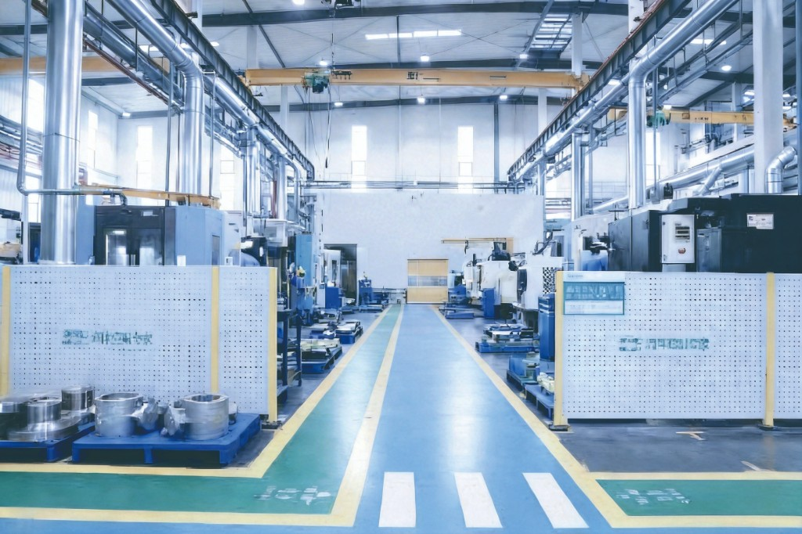
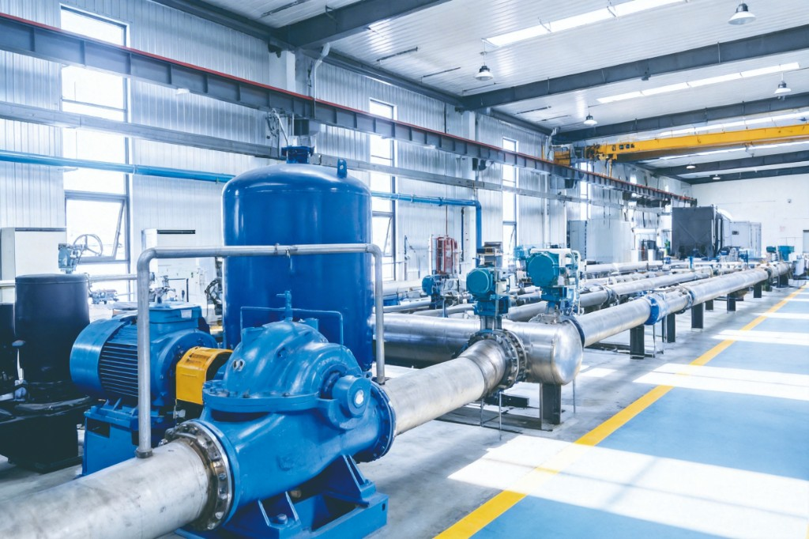
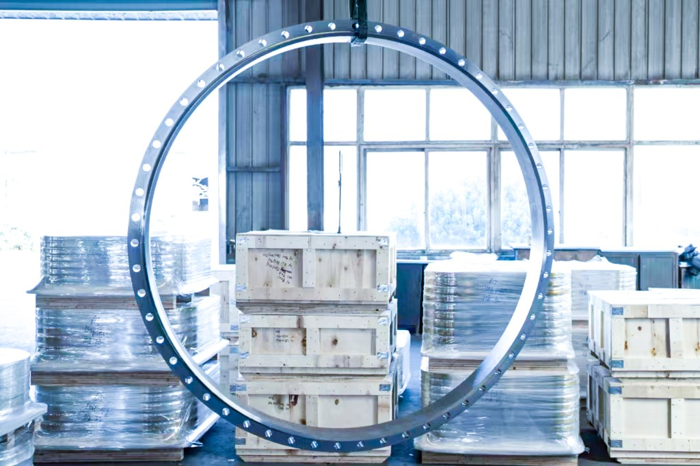
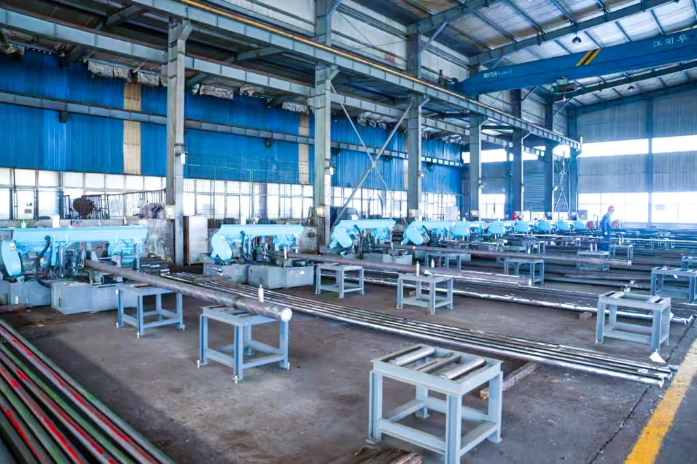
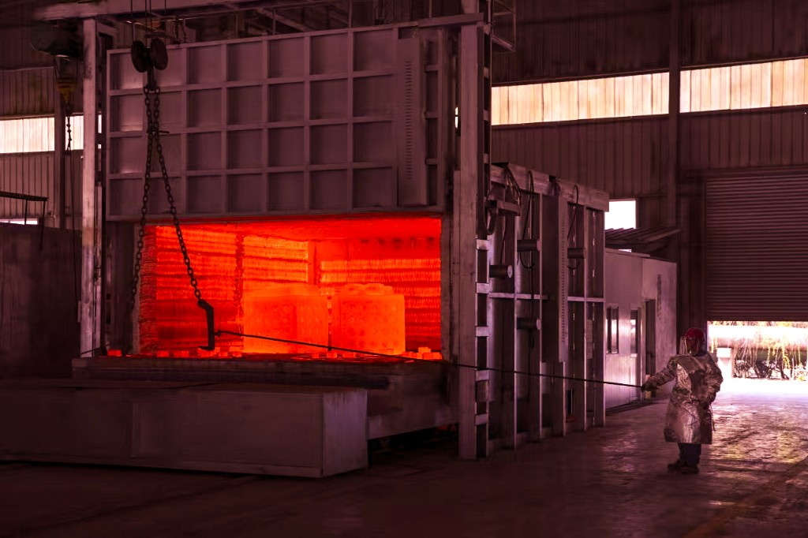
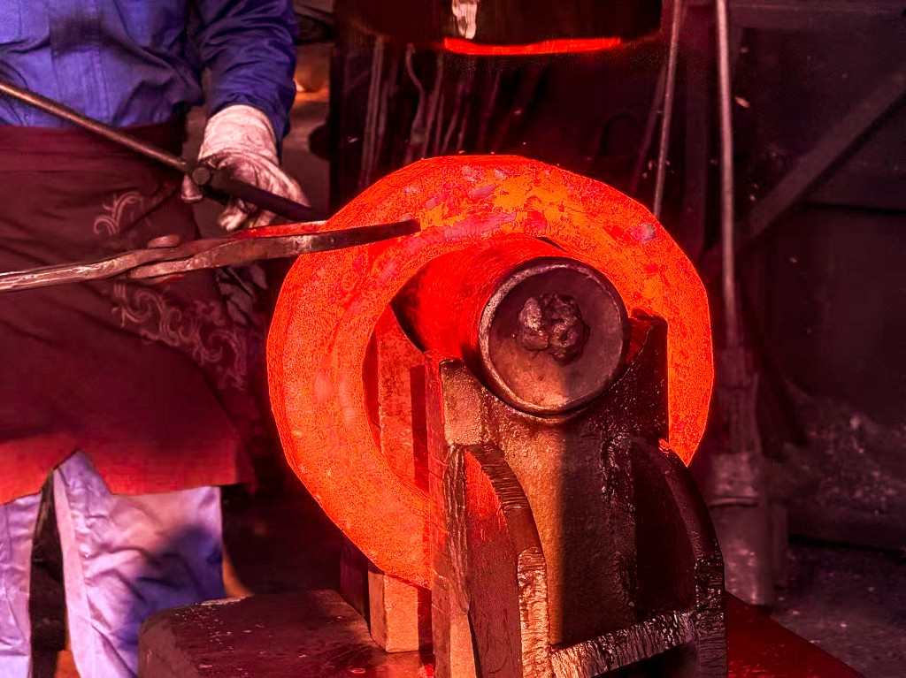
热处理
热处理与消应力
法兰与阀门材料需经过受控热处理。我们采用正火、淬火、回火及消应力等工艺，在箱式炉、井式炉中完成，温控与记录可追溯。通过热处理优化力学性能（强度、韧性）并消除锻造与机加工残余应力，满足 ASTM、EN、NACE 等油气工况要求。
主要设备：箱式炉 · 井式炉 · 淬火设施 · 温度记录仪
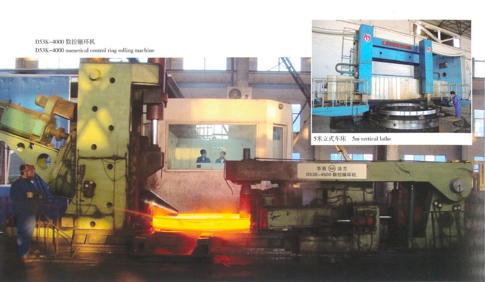
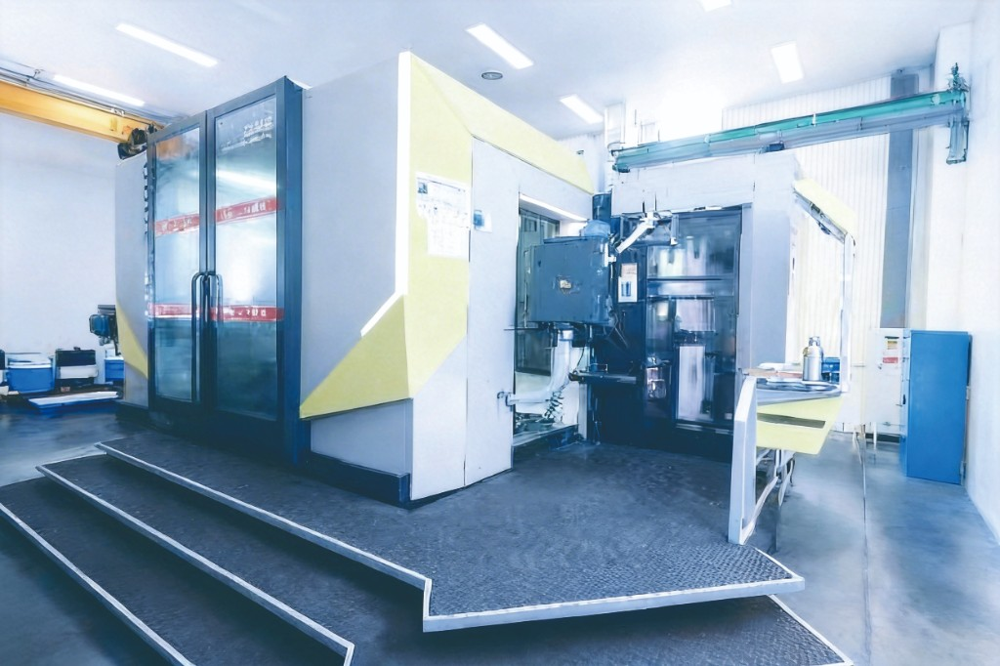

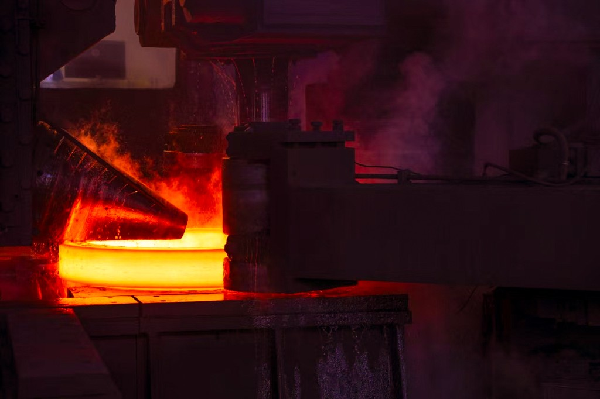
数控加工
数控加工与精加工
精密加工在立式车床、卧式/立式加工中心及镗床上完成。法兰加工涵盖密封面、内孔、螺栓孔圆及垫片槽；阀门加工涵盖阀体、阀盖及内件。数控程序与刀具管理保证批量与单件订单的重复精度与可追溯性。
主要设备：立车 · 加工中心 · 镗床 · 车削与铣削
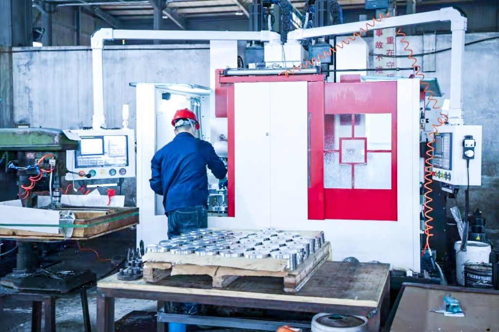
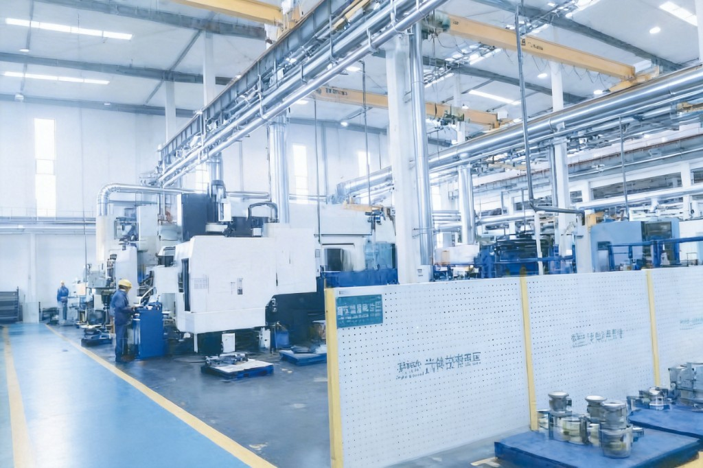
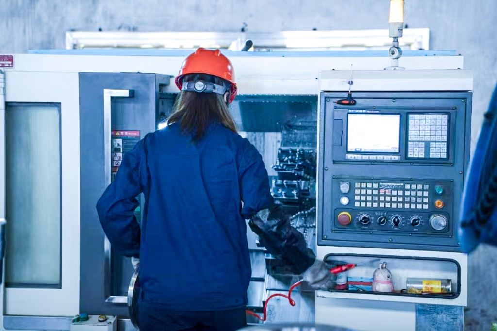
测试验证
无损检测与压力/流量试验
质量验证包括无损检测（按需进行 UT、MT、PT）、承压件水压试验以及控制阀流量试验。尺寸检验与材质证明均留档可追溯。检测设备与流程满足 EPC 及业主项目对完整文件化交付的要求。
主要设备：超声波探伤仪(UT) · 磁粉探伤(MT) · 渗透探伤(PT) · 水压试验台 · 流量试验台
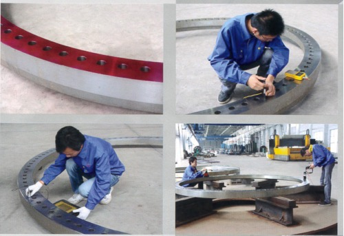